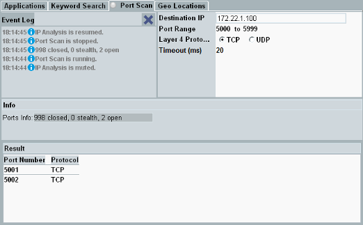

This tab allows you to scan the IP ports of the DUT, to detect open ports. Unwanted open ports are potential points of attack from the Internet. Such ports can be opened by erroneous programs or apps, or they can be opened on purpose by malware.
The port scan checks and reports the states of a configurable range of ports. Configure the settings in the upper part of the tab and press the softkey "Start Scan".

A port scan generates IP flows. During a port scan, the other IP analysis measurements are paused, so that they do not report the generated IP flows. Statistical values like byte counters and packet counters are not increased during a port scan.
In paused measurement diagrams, you can see artifacts due to interpolation effects, for example in throughput diagrams. It is recommended, not to use the port scan and throughput measurements at the same time.
Reports events like start and end of a port scan. Or pausing the IP analysis due to a port scan.
The button to the right clears the displayed entries.
Remote command:IP address of the destination to be scanned. Typically the IP address of your DUT.
Remote command:Port range to be scanned.
- System ports / well-known ports: 0 to 1023
- User ports / registered ports: 1024 to 49151
- Dynamic ports / private ports / ephemeral ports: 49152 to 65535
Only ports for the selected protocol (TCP or UDP) are considered.
Remote command:Configures a timeout for the port scan.
Remote command:The "Info" area lists an overview of the scan results. It shows how many ports are in state "open", "closed" or "stealth".
The meaning of these states depends on the protocol.
Port state | Meaning for TCP | Meaning for UDP |
|---|---|---|
"open" | DUT replies with SYN, ACK | No answer from the DUT within 1000 ms |
"closed" | DUT replies with RST, ACK | DUT sends ICMP "destination unreachable" |
"stealth" | No answer from the DUT within 300 ms | not relevant for UDP |
The "result" area lists all open ports.
For each port in state "open", it indicates the port number and the layer 4 protocol.
Remote command:Press the softkey "Start Scan" to initiate a port scan. The softkey is only active if the IP analysis application is running and you have entered a destination IP address.
You can abort a scan via the softkey "Abort Scan".
Remote command: